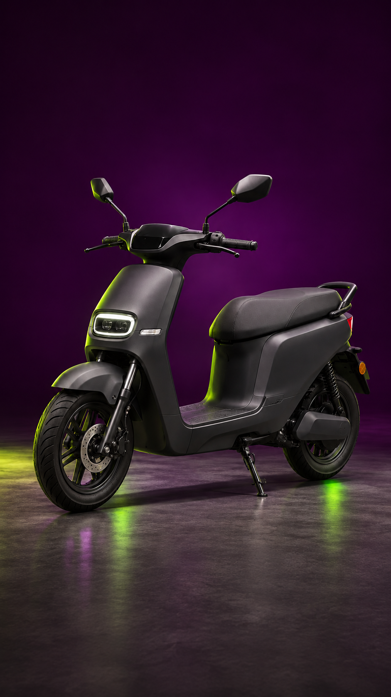
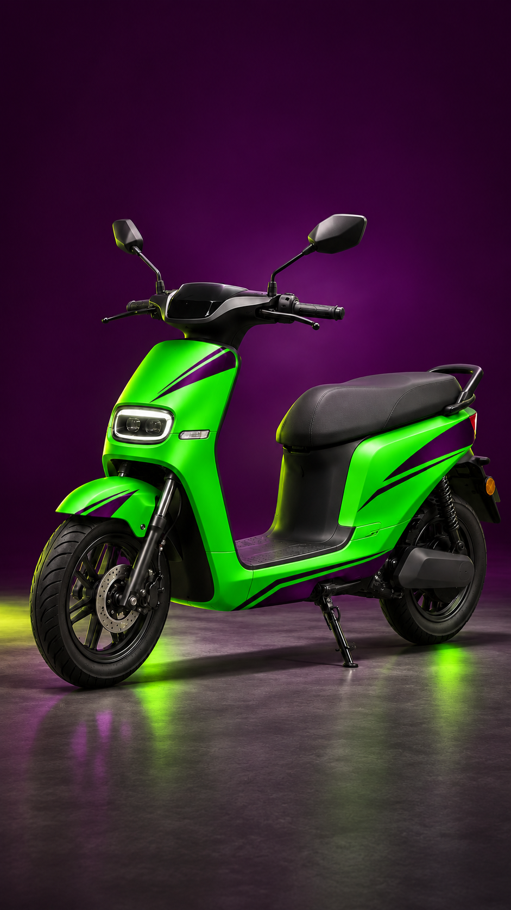
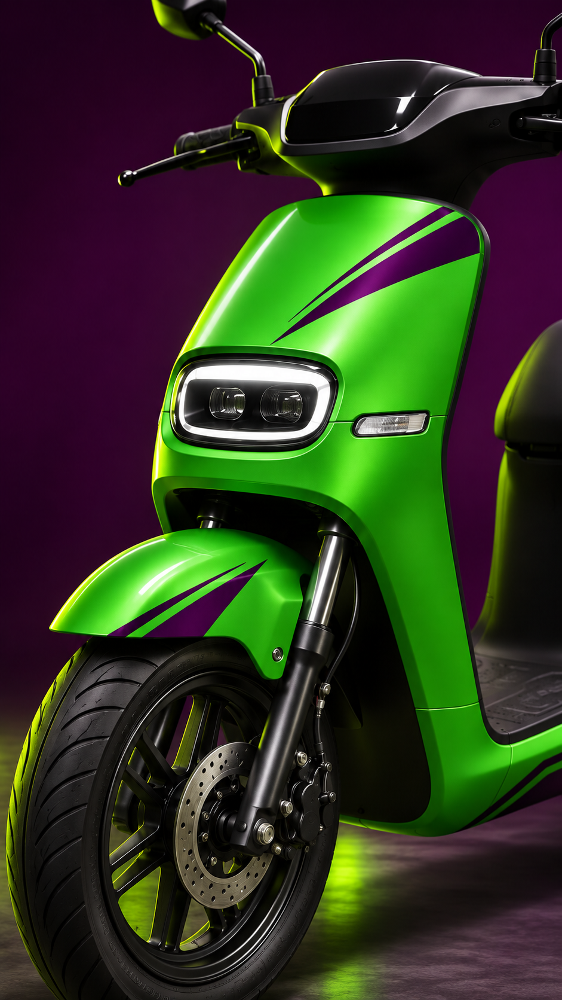

00:00–00:02
01 · Antes
Plano vertical completo, scooter grafite e câmera quase parada.
Câmera: push-in bem lento, leve movimento de mão.
Kroma · antes / depois
Storyboard conceitual baseado na referência vertical enviada. O corte principal combina o mesmo ângulo antes/depois com a animação de pulso já aprovada.

Plano vertical completo, scooter grafite e câmera quase parada.
Câmera: push-in bem lento, leve movimento de mão.
Corte seco para preto. O símbolo verde se transforma em roxo.
Câmera: fixa. Beat entra no primeiro pulso.

Match cut do mesmo ângulo; verde Kroma aparece no kick.
Câmera: aproximação curta e firme.

Close no farol, grafismo roxo e roda dianteira.
Câmera: slide lateral baixo e suave.
As três imagens são concept art e não representam um serviço já realizado. Para publicar como case real, substituir pelas imagens da moto do cliente.